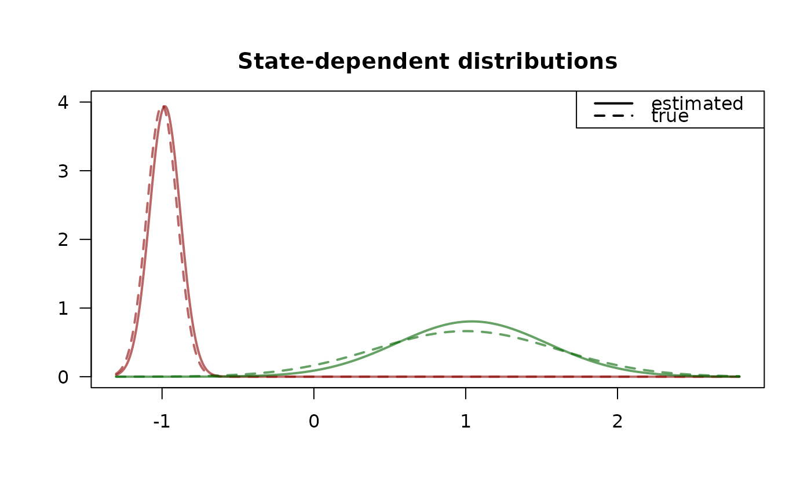
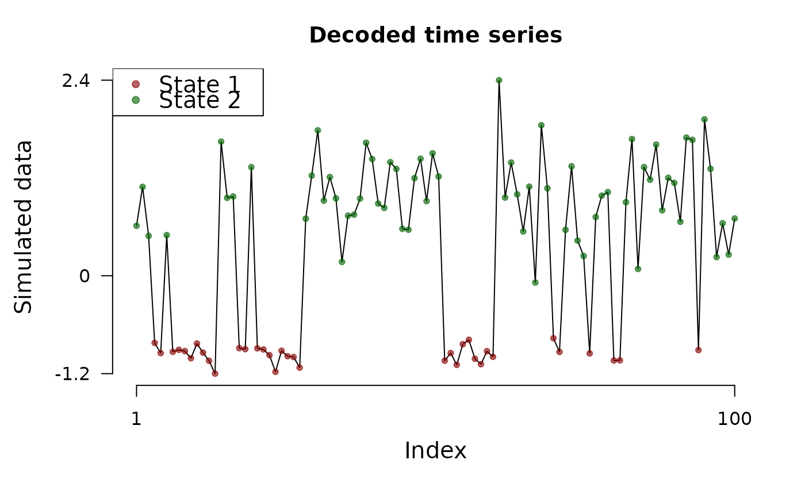

Fitting (hierarchical) hidden Markov models to financial data via maximum likelihood estimation. See Oelschläger, L. and Adam, T. "Detecting Bearish and Bullish Markets in Financial Time Series Using Hierarchical Hidden Markov Models" (2021, Statistical Modelling) doi:10.1177/1471082X211034048 for a reference on the method. A user guide is provided by the accompanying software paper "fHMM: Hidden Markov Models for Financial Time Series in R", Oelschläger, L., Adam, T., and Michels, R. (2024, Journal of Statistical Software) doi:10.18637/jss.v109.i09 .
Author
Maintainer: Lennart Oelschläger oelschlaeger.lennart@gmail.com (ORCID)
Authors:
Timo Adam ta59@st-andrews.ac.uk (ORCID)
Rouven Michels r.michels@uni-bielefeld.de (ORCID)
Examples
### 2-state HMM with normal distributions
# set specifications
controls <- set_controls(
states = 2, sdds = "normal", horizon = 100, runs = 10
)
# define parameters
parameters <- fHMM_parameters(controls, mu = c(-1, 1), seed = 1)
# sample data
data <- prepare_data(controls, true_parameter = parameters, seed = 1)
# fit model
model <- fit_model(data, seed = 1)
#> Checking start values...
#> Maximizing likelihood...
#> Approximating Hessian...
#> Fitting completed!
# inspect fit
summary(model)
#> Summary of fHMM model
#>
#> simulated hierarchy LL AIC BIC
#> 1 TRUE FALSE -62.46497 136.9299 152.561
#>
#> State-dependent distributions:
#> normal()
#>
#> Estimates:
#> lb estimate ub true
#> Gamma_2.1 0.07297 0.1375 0.2441 0.1632
#> Gamma_1.2 0.14580 0.2638 0.4294 0.3116
#> mu_1 -1.01451 -0.9809 -0.9474 -1.0000
#> mu_2 0.91985 1.0404 1.1609 1.0000
#> sigma_1 0.08018 0.1013 0.1280 0.1008
#> sigma_2 0.41678 0.4954 0.5889 0.6008
plot(model, "sdds")

# decode states
model <- decode_states(model)
#> Decoded states
plot(model, "ts")

# predict
predict(model, ahead = 5)
#> state_1 state_2 lb estimate ub
#> 1 0.13749 0.86251 0.03672 0.76246 1.48820
#> 2 0.21980 0.78020 -0.07631 0.59608 1.26846
#> 3 0.26909 0.73091 -0.14397 0.49647 1.13691
#> 4 0.29859 0.70141 -0.18448 0.43683 1.05815
#> 5 0.31625 0.68375 -0.20874 0.40113 1.01099